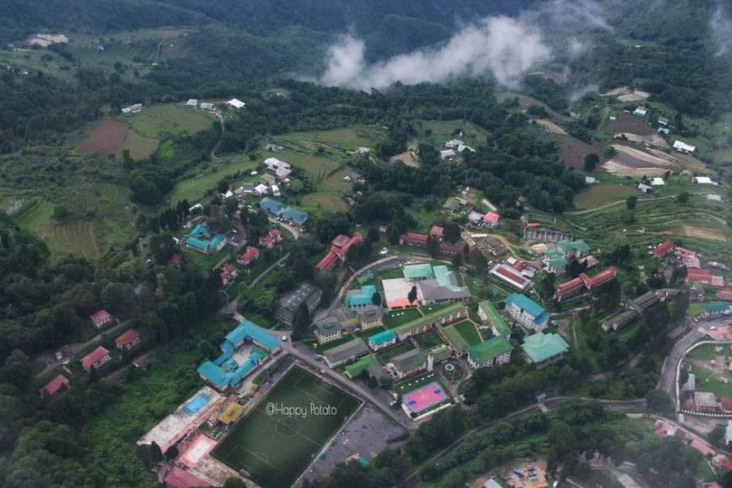

About Us
 Sherubtse to me is what Hogwarts is to Harry Potter, Keazang Dorji
Sherubtse to me is what Hogwarts is to Harry Potter, Keazang Dorji
Sherubtse- More than a Peak of Learning, Dasho Tshering Tobgay
Sherubtse College in Kanglung has the repute and the standing that it inspires every Bhutanese young man and woman get to “The Peak of learning.” The premier institute in Trashigang has consistently contributed to the shaping of the nation by producing a cadre of much needed, homegrown, manpower to man the fast growing public and the private sector. It has, for long, been the highest centre of modern learning and, in its 50 years (Sherubtse turns 50 next year), Sherubtse has given the nation engineers, doctor, pilots, educators, bankers and businessmen. It has given the country cabinet ministers and the first women minister – the list is long. When I first heard of Sherubtse, I was told that it is the “Peak of Learning.” But now, when I look back at the time I spent in Sherubtse and reflect on the institution, it is more than a Peak of Learning. Sherubtse has given me the foundation to learning throughout my life. Sherubtse is a means to pursue learning. It is a symbol of life long pursuit and the hunger to pursue it. There is no end to learning. There is no Peak in learning.
For many Bhutanese including myself, Sherubtse was a launching pad. We have learnt a lot in the college that moulded me into the person I am. It is a sacred institution. I respect this institution for what it has given me and to thousands of other Bhutanese. Even today when I drive through Sherubtse, whether alone or with escort vehicles, the sense of reverence overcomes me. I have still the same reverence I had for this sacred institution when I was a student in the 1980s. There is no particularly memory to cherish. This is because Sherubtse is a repository of memories- whether it is falling in love, getting rejected or just hanging out with friends. Of endless walks and talks, drinking Phika (black tea) at Palas or the snail-paced walk to the “romantic bench” and back. Of singing and playing music till the wee hours. We celebrated love. We celebrated friendship. These memories are priceless. Sherubtse is a small place with a few shops back then. But it was always bustling with life and commerce. There was a different charm in this little town surrounding the College. Even after coming back from Thimphu, we would relish the food in these small eateries. Sherubtse taught us perseverance. The great masters and friends shared a vision- a deep sense of service to the nation. Father G E Leclaire gave me a second chance when he encouraged me to repeat one more year when I was in Class XI. Mr Phantom never gave up on me and encouraged me to pursue the highest standards.
I cannot forget the friendship and the support of my friends – Nidup Dorji, the present Vice Chancellor of the Royal University of Bhutan, Yangka, Director at RUB and Dawa Penjor, the director of National Mushroom Centre. These friends were dedicated to hard work and whenever I needed them, they gave me all. They are the epitome of selflessness. Their help and support were instrumental in my success in getting a scholarship to study abroad. Sherubtse had grown and grown very fast. From a public school in 1963, Sherubtse has stayed true to its motto, “Education for Excellence.” Sherubtse has reached the top even if there isn’t a peak! The premier institute can set standards for tertiary education and beyond. There should not be any compromises. It can be the best and must be the best! It can be achieved by aspiring big and working hard. I recall His Majesty The King’s address to Sherubtse graduates during the 11th biennial Convocation in 2007. The message was clear and loud reaching out beyond Sherubtse, to the entire nation. Aspire and work hard we must. That is the message when His Majesty said that Bhutan had everything it takes to build a strong economy, the foundation of Bhutan’s growth, and safeguard everything we cherish. There was only one condition- “that we start today- with big ambitions, and we work hard.” My vision for Sherubtseans, those that are here and future Sherubtseans is that we fulfil the vision of our beloved King. His Majesty had been urging our people to rise to the challenge, change their mindset, the way of working and work hard. Our beloved King wants our young generation, all of you, to have big ambitions and hopes. His Majesty said that he will adopt your aspirations as His own and work towards fulfilling them. I am fully committed to realising this vision. I would want each one of you to set big ambitions and work hard in fulfilling them. In fulfilling your hopes and dreams, if they are set high, you will be contributing to the growth of the country. My vision of Sherubtse is churning out the crème de la crème of Bhutanese citizens in every field that you chose to work. Times have changed. When I graduated, there were more vacancies in the civil service than graduates. Today, many graduates lose hope even before they graduate given the competition in the job market. There is no denying that we have more university graduates than jobs. The challenges are daunting. But the same challenges can be turned into opportunities if you work hard and plan ahead, like His Majesty the King said. As the premier institute of the country that is soon celebrating its Golden Jubilee, I hope Sherubtse will continue to remain true to its motto and understand your responsibilities in shaping the nation. His Majesty The King continuously remind the nation’s academic elite, the students of higher institution of learning that Bhutan is enjoying the fruits of labour of our ancestors while we celebrate past achievements. Theirs is the challenge to ensure that the kingdom of Bhutan continues to take a lead role in human development. It is a message of opportunity, of hope and aspirations -that it could be done and that challenges could be turned into opportunities.
